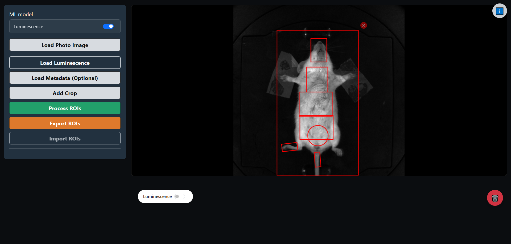
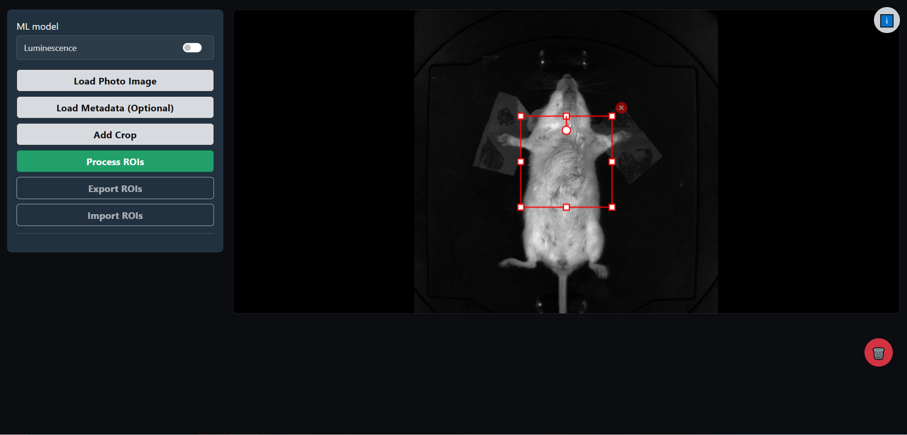
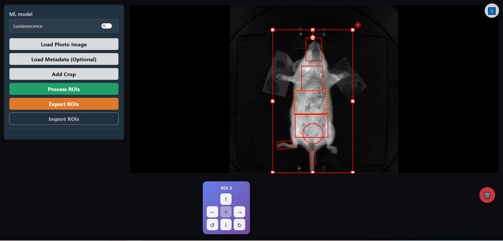
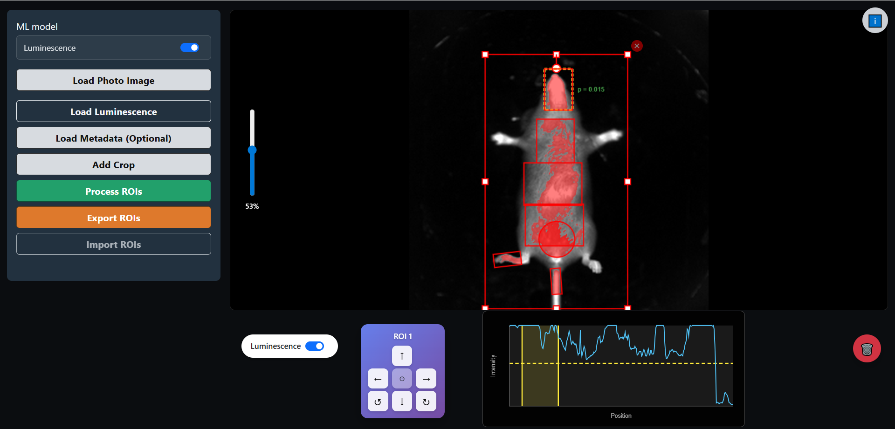

Example¶
A step-by-step walkthrough of a typical workflow with screenshots.
1. Load the Photo Image¶
Open the application and click Load Photo Image to select your TIFF file.

2. Load Luminescence (Optional)¶
For dual-input analysis, enable the Luminescence model switch and load the fluorescence image.

Flexible Loading
The fluorescence image can be loaded at any time:
- Before processing - Load it now to use the dual-input model immediately
- After prediction - Load it later if you initially used the anatomy-only model and want to analyze signal intensity
3. Add Crops¶
Click Add Crop to create a bounding box around each mouse.

Multiple Mice
The same procedure works for images containing multiple mice. Simply add one crop per mouse (e.g., 3 crops for 3 mice). Each crop will be processed independently.
4. Adjust the Crop¶
Resize and position the crop to fit the mouse. Use the corner handles to resize and the circular handle to rotate.

5. Process ROIs¶
Click Process ROIs to run the prediction model.

6. Review Predictions¶
The model outputs 7 ROIs per mouse. Click on any ROI to select and adjust it.

7. Place Control ROI (Optional)¶
Double-click on a dark area of the image to place a Control ROI for background light measurement.
Control ROI
The Control ROI is used to check baseline fluorescence levels. It appears as a white circle and is automatically assigned:
- ID 8 for single-mouse images
- ID 15 for multi-mouse images
8. Analyze Signal¶
Switch to luminescence view and adjust the threshold slider to highlight relevant pixels.

9. Export Results¶
Click Export ROIs to download the results in a format compatible with the imaging system.

The exported file is named AnalyzedClickInfo.txt and contains all ROI coordinates in the original TIFF format.
Example Output¶
Here's a sample of the exported AnalyzedClickInfo.txt file:
*** photographic image: photograph.TIF
Acquisition Date: Monday, December 29, 2025
Acquisition Time: 14:32:15
Binning Factor: 4
*** ROIs: 7 ROIs for this Click
ROI 1: zColorIndex=1;ROI Type=Measurement;ColorTable=BlueRedGreen;Subject ROI=_none_;Subject ID=;Subject Label=;Bkg ROI=_none_;LineSize=2.000000;Locked=0;PositionLocked=0;Shape=Square;Xc=955.071720546938;Yc=1254.6621;Width=178.3680;Height=263.7024;Angle=5.2341;Label=ROI 1;cm per pixel=0.006979166667;ROIColor=255;
ROI 2: zColorIndex=1;ROI Type=Measurement;ColorTable=BlueRedGreen;Subject ROI=_none_;Subject ID=;Subject Label=;Bkg ROI=_none_;LineSize=2.000000;Locked=0;PositionLocked=0;Shape=Square;Xc=985.234567890123;Yc=1389.4532;Width=240.1920;Height=280.5312;Angle=5.1987;Label=ROI 2;cm per pixel=0.006979166667;ROIColor=255;
ROI 3: zColorIndex=1;ROI Type=Measurement;ColorTable=BlueRedGreen;Subject ROI=_none_;Subject ID=;Subject Label=;Bkg ROI=_none_;LineSize=2.000000;Locked=0;PositionLocked=0;Shape=Square;Xc=1012.567890123456;Yc=1542.8765;Width=370.1760;Height=272.0544;Angle=5.3124;Label=ROI 3;cm per pixel=0.006979166667;ROIColor=255;
ROI 4: zColorIndex=1;ROI Type=Measurement;ColorTable=BlueRedGreen;Subject ROI=_none_;Subject ID=;Subject Label=;Bkg ROI=_none_;LineSize=2.000000;Locked=0;PositionLocked=0;Shape=Square;Xc=1045.678901234567;Yc=1698.2341;Width=372.2880;Height=267.8400;Angle=5.2876;Label=ROI 4;cm per pixel=0.006979166667;ROIColor=255;
ROI 5: zColorIndex=1;ROI Type=Measurement;ColorTable=BlueRedGreen;Subject ROI=_none_;Subject ID=;Subject Label=;Bkg ROI=_none_;LineSize=2.000000;Locked=0;PositionLocked=0;Shape=Circle;Xc=931.600940981105;Yc=1453.0745;Width=229.4400;Height=229.4400;Angle=0.0000;Label=ROI 5;cm per pixel=0.006979166667;ROIColor=255;
ROI 6: zColorIndex=1;ROI Type=Measurement;ColorTable=BlueRedGreen;Subject ROI=_none_;Subject ID=;Subject Label=;Bkg ROI=_none_;LineSize=2.000000;Locked=0;PositionLocked=0;Shape=Square;Xc=1078.345678901234;Yc=1845.3456;Width=174.1440;Height=84.6720;Angle=5.4231;Label=ROI 6;cm per pixel=0.006979166667;ROIColor=255;
ROI 7: zColorIndex=1;ROI Type=Measurement;ColorTable=BlueRedGreen;Subject ROI=_none_;Subject ID=;Subject Label=;Bkg ROI=_none_;LineSize=2.000000;Locked=0;PositionLocked=0;Shape=Square;Xc=1095.123456789012;Yc=1978.5432;Width=63.3600;Height=165.6960;Angle=5.3987;Label=ROI 7;cm per pixel=0.006979166667;ROIColor=255;
Output Format
- Coordinates are scaled to the original TIFF dimensions (1920px)
- If metadata was loaded, it will be preserved and merged with the new ROIs